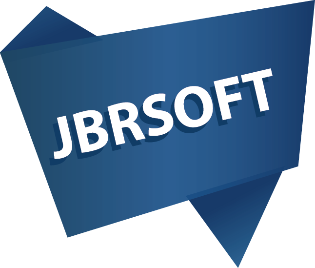

JULHAS SUJAN
ENTREPRENEUR & SOLUTION ARCHITECH
I'm a challenger as well as a driver so I prefer discipline to set work hours, meet deadlines, pursue new clients and avoid tempting distractions. Feel free to take a look around my activities.
- Mohammad Julhas Sujan
- February 21, 1990
- Nikunja-2, Khilkhet, Dhaka-1229
- julhaspustcse@gmail.com
- +8801989-442856
- www.julhas.com
Employment
-
DHIS2 Developer2017 - Present
Department of Informatics, University of Oslo
Oslo, Norway
- 1. To design and develop Anti-Microbial Resistance (AMR) visualization apps using DHIS2 web api for the Indian Council of Medical Research (ICMR), India
- 2. To design and develop interoperability between DHIS2 WHONET (http://whonet.org/)
- 3. To design and develop DHIS2 e-Registry apps for Bangladesh and Palestine project
- 4. To design new and enhanced national health information systems using the DHIS 2 platform. Work with Ministry of Health in Bangladesh and UNICEF Bangladesh in designing systems tailored to local contexts and needs.
- 5. To document current status and need, gather requirements, initiate new architectural features, enhancements and innovations in the field of interoperability and custom apps.
- 6. To develop local apps and innovations to cover country needs vs platform functionality gaps, and push the utilization of the generic platform to new areas of use.
- 7. Contribute to the complex and innovative task of developing software to support health information systems in countries, including
- 8. Development of new features that can be incorporated into the global DHIS 2 platform and contribute to new release.
- 9. Innovations to address challenges in terms of scaling, security, modeling and integration, and develop new solutions which can work in limited resource settings with e.g. lack of online access and technical literacy
- 10. Transform user requirements into usable and scalable system functions, for example understanding information needs and the type of analysis required.
- 11. Be part of building capacity and sustainability in the app development team in Bangladesh.
- 12. Focal person of DHIS2 Online Web Apps development Academy, University of Oslo
- 13. DHIS2 Master facility list (MFL) app design and development for Ministry of Health, Indonesia
-
Senior Java Developer2015 - 2017
Management Sciences for Health (MSH), USAID
Dhaka, Bangladesh
-
ERP Developer Using Java and Oracle2015 - 2015
Infosys Limited
Mysore, India
-
Software Developer2013 - 2015
Bashundhara Group
Dhaka, Bangladesh
-
Chief Executive Officer2012 - Present
JBRSOFT
Education
-
B.Sc in Computer Science and Engineering2009 - 2013
Pabna University of Science and Technology, Bangladesh
CGPA 3.81- First Class Second Position
Entrepreneurship Skills
-
Curiosity
-
Time management
-
Strategic thinking
-
Efficiency
-
Resilience
-
Communication
-
Networking
-
Branding
-
Sales
Programming Skills
-
Java / J2EE
-
Node JS / Express JS
-
React JS / Redux
-
PHP / Laravel
-
Microservices
-
ReST API
-
MySQL
-
Postgresql
-
Oracle
ERP Skills
-
SAP ABAP
-
ISPERP
Open Source Platform
-
DHIS2
-
OpenMRS
-
OpenELIS
-
SHR
-
D2LMIS
New Technologies
-
Blockchain
-
Bigchain DB
-
Bigdata
Explore some of my developed projects
-
Anti-Microbial Resistance (AMR) visualization apps using DHIS2
-
DHIS2 User’s Activity Capture and Research Apps
-
DHIS2 Validation Results App
-
Master Health Facility List (MFL) Map Visualization
-
Facility Registry Interoperability App in DHIS2
-
DHIS2 Middleware Apps
-
Routine Health Information System
-
Interoperability between RHIS and DHIS2
-
Khulna Shishu Hospital Automation System
-
eLMIS Development in DHIS2 platform
-
DHIS2 MiddleWare Application for Ministry of Health
-
RHIS Support Ticket System
-

ISPERP
-
D2LMIS
-
RxHAS
-
Restaurant Management System with PoS
-
Dashboard and Website for ICT Division
-

BI for SAP
-
E-commerce Product Management
{kind=link}
{kind=link}
{kind=link}
{kind=link}
Contact info
- Nikunja-2, Khilkhet, Dhaka-1229
- Email: julhaspustcse@gmail.com
- Phone: +8801989-442856
- Website: www.julhas.com